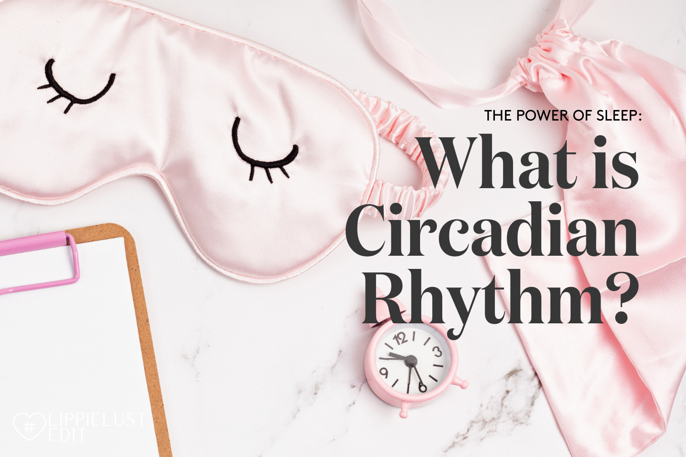

Untuk yang belum tahu, sekarang Team Lippielust enggak cuma menyajikan info tentang makeup juga swatches, tapi juga pengetahuan singkat yang penting untuk kita ketahui melalui Instagram Story. Di minggu ini Putri dari Team Lippielust udah meringkas solusi untuk mendapatkan tidur nyenyak. Disana ia membahas sedikit tentang Circadian Rhythm, atau dalam bahasa Indonesia-nya Ritme Sirkadian. Apakah itu? Seberapa penting Ritme Sirkadian dengan siklus tidur dan bangun kita?
Apa Itu Circadian Rhytm?

Circadian = Circa (about) - Diem (a day)
Walaupun dipengaruhi juga oleh hal lain, SCN sangat sensitif terhadap cahaya sehingga cahaya menjadi isyarat eksternal paling penting dalam Ritme Sirkadian. Ketika mata kita menerima cahaya, retina memberikan informasi pada SCN, dan SCN memproses sinyal ini untuk mengkoordinasikan jam internal dalam tubuh. Karena tugasnya inilah ritme sirkadian berhubungan erat dengan waktu siang dan malam.
Apa Hubungan Ritme Sirkadian dengan Tidur?
Walaupun dipengaruhi juga oleh hal lain, SCN sangat sensitif terhadap cahaya sehingga cahaya menjadi isyarat eksternal paling penting dalam Ritme Sirkadian. Ketika mata kita menerima cahaya, retina memberikan informasi pada SCN, dan SCN memproses sinyal ini untuk mengkoordinasikan jam internal dalam tubuh. Karena tugasnya inilah ritme sirkadian berhubungan erat dengan waktu siang dan malam.
Setiap pagi saat sinar matahari mulai naik, suhu tubuh pun akan ikut naik dan kortisol akan diproduksi untuk meningkatkan alertness atau kewaspadaan kita. Singkatnya, kortisol inilah yang akan membuat kita bangun. Di malam hari saat matahari turun dan hari mulai gelap, kadar melatonin, hormon yang mendorong agar kita tidur, meningkat dan suhu tubuh menurun. Karena tugasnya inilah kadar melatonin akan tetap tinggi sepanjang malam agar tubuh kita bisa tidur. So, selama mata kita masih bisa menerima cahaya, SCN akan merespon dengan menekan produksi melatonin. Hal inilah yang menjelaskan kalau kita terus-menerus melihat cahaya dalam ruangan termasuk perangkat elektronik seperti handphone yang memancarkan cahaya biru bikin kita jadi lebih sulit tidur.
Bagaimana Jika Ritme Sirkadian Terganggu?
Ketika Ritme Sirkadian terganggu, itu artinya sistem tubuh kita enggak berfungsi secara optimal. Siklus tidur-bangun (sleep-wake cycle) yang terganggu dapat menyebabkan masalah tidur yang serius. Tanpa sinyal yang tepat dari jam internal tubuh ini, seseorang bisa berjuang untuk sekedar tidur atau bangun di waktu yang tepat di pagi hari, sesuai dengan kebutuhan tidur harian berdasarkan usia kita.
Karena tidur memiliki peran penting untuk produktivitas dan kesehatan manusia secara keseluruhan, seringkali terdapat konsekuensi yang signifikan ketika Ritme Sirkadian tidak berjalan dengan optimal. Gejala umum yang berhubungan dengan Circadian Rhythm Disorder, antara lain: Insomnia, Lesu dan merasa lelah sepanjang hari, Penurunan kewaspadaan (alertness) dan kesulitan berkonsentrasi, Penilaian yang terganggu (impaired judgement) dan kesulitan mengendalikan mood dan emosi, serta depresi / stres.